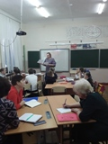
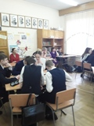
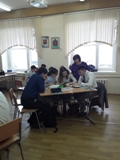
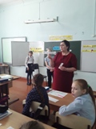

   20 февраля в
МБОУ СШ № 3 прошёл методический день для педагогов образовательных учреждений
города на тему: «Читательская грамотность как основа успешности учащегося». Особое
место среди метапредметных универсальных учебных действий занимает чтение и
работа с информацией. Успешное обучение в начальной и основной школе невозможно
без сформированности у учащихся читательской грамотности. Актуальность данной проблемы обусловлена и тем, что читательская
грамотность лежит в основе умения учиться.
Чтобы ориентироваться в этом потоке
информации необходимо уметь анализировать, интерпретировать и оценивать
её. Сегодня, ситуация в области чтения напряжена: время на чтение постоянно
сокращается, круг чтения сужается, литературные вкусы делаются более
примитивными, поэтому учителю нужно ясно осознавать, что без привлечения к
чтению, без формирования уважения, любви к книге, тяги к чтению, без
сознательного чтения как труда и творчества, невозможно формирование читательской
информационной культуры. Ведь, теперь,
чтобы получить сведения по какому-нибудь вопросу, люди не прорабатывают
литературу, не сидят часами в библиотеках, а находят ответы на все вопросы в
Интернете. Дети в настоящее время овладевают компьютером раньше, чем учатся
читать, ориентируются в клавиатуре лучше, чем в
оглавлении книги.
Любой учитель
постоянно задаёт себе вопросы: как заинтересовать ребёнка книгой? Как научить
ребёнка любить книгу? Ведь современные дети не любят читать, они читают мало и
с неохотой. Но от умения читать в дальнейшем зависит качество всего процесса обучения. Не научившись хорошо
читать, ребёнок не сможет прочитать задачу по математике, овладеть историей,
естествознанием и другими предметами на должном уровне или без посторонней
помощи. А подготовить реферат или сообщение по какой-либо теме для
слабочитающего ребёнка будет и вовсе непосильной задачей.
Как показывает
практика, если ребёнок недостаточно хорошо читает, то он неграмотно пишет,
устная речь недостаточно развита. Поэтому научить ребёнка читать, пользоваться
книгой как источником знаний и информации, приобщить обучающихся к миру книг и
тем самым способствовать развитию самостоятельной читательской деятельности –
это та задача, которую каждый учитель ставит перед собой.
В рамках этого
дня педагоги школы поделились своим опытом. Методическая работа школы по
формированию читательской грамотности была представлена разными мероприятиями. Мастер-классы:
«Использование приёмов смыслового чтения при работе с текстом на уроках
русского языка и литературы» (Лаврентьева Н.В., Хохлова М.Г.), «Технология
продуктивного чтения в начальной школе» (Емельченко Т.И., Патюкова В.В.),
«Приёмы формирования читательской грамотности на уроках английского языка»
(Ловчикова А.А., Зыкова А.В., Веселова Е.А.), «Приёмы формирования читательской
грамотности на уроках математики» (Соболева В.И., Скобелкина Л.С., Иванова
Л.Н.). Занятия внеурочной деятельности: «Эрудит» (Кашкина А.Н.), «Путешествие к
звездам» (Дрозд С.П.), «Знатоки русского языка» (Давыдова А.А.). Факультативные
занятия: «Изучаем Конституцию России» (Килина В.М.), «Занимательное черчение» (Старжевская М.А.).
Открытые уроки по «Биологии» (Попова С.В.),
«Литературе» (Переверзева И.К.), «Литературному чтению» (Лукьянцева
Л.В., Куприянова Н.В.), «Истории» (Жичинская О.В.).
Педагоги
продемонстрировали новые, а также давно знакомые приемы по формированию читательской
грамотности. Это: пробно-поисковые ситуации; беседы-дискуссии; сам задай
вопрос; личный пример учителя; приём устного словесного рисования;
словарно-стилистическая работа; элементы драматизации; техники мирового кафе;
техники смыслового и продуктивного чтения(письмо по кругу, «Лови ошибку»,
«Маркировка». «Выделяем существенные признаки», «Мозаика». «Реставрация текста», "Мозговой
штурм", "Глоссарий", "Чтение в кружок", "Чтение с
остановками", "Чтение с пометками", "Синквейн" и др.
После проведения уроков и мероприятий был
сделан самоанализ уроков и анализ мероприятий. Педагоги дали оценку
деятельности коллег, выразили свое мнение, поблагодарили за работу. |